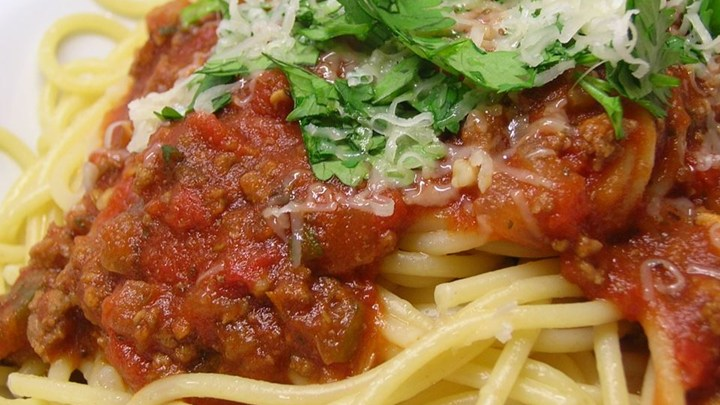
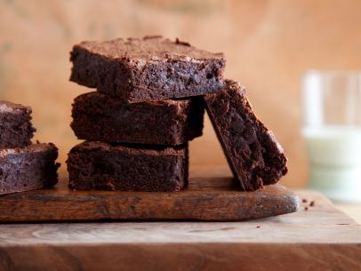

General Tso's Chicken (4 servings)
Ingredients
- 3 chicken breasts, cut into bite sized pieces
- 1/4 cup cornstarch
- 2 tablespoons vegetable oil
- 1 cup hoisin sauce
- 4 tablespoons rice wine vinegar
- 4 tablespoons light brown sugar
- 2 teaspoons sesame oil
- green onions for serving, if desired
- sesame seeds for serving, if desired
Instructions
- Add chicken and cornstarch to a large ziplock bag. Toss to coat the chicken with the cornstarch.
- Heat oil in a large skillet or wok.
- Saute chicken until golden brown on both sides about 2 minutes on each side. (Note the chicken will not be fully
cooked and that is ok)
- Add the chicken to the slow cooker.
- Add hoisin sauce, vinegar, sugar and sesame oil to a medium bowl and whisk until combined.
- Pour the sauce onto the chicken and stir to coat the chicken.
- Cook on low for 2-3 hours.
- Serve with green onions and sesame seeds for serving, if desired.
Source: Chef Savvy
Spaghetti Sauce with Ground Beef (8 servings)
Ingredients
- 1 pound ground beef
- 1 onion, chopped
- 4 cloves garlic, minced
- 1 small green bell pepper, diced
- 1 (28 ounce) can diced tomatoes
- 1 (16 ounce) can tomato sauce
- 1 (6 ounce) can tomato paste
- 2 teaspoons dried oregano
- 2 teaspoons dried basil
- 1 teaspoon salt
- 1/2 teaspoon black pepper
Instructions
- Combine ground beef, onion, garlic, and green pepper in a large saucepan. Cook and stir until meat is brown and
vegetables are tender. Drain grease.
- Stir diced tomatoes, tomato sauce, and tomato paste into the pan. Season with oregano, basil, salt, and pepper.
Simmer spaghetti sauce for 1 hour, stirring occasionally.
Source: allrecipes

Cocoa Brownies (16 brownies)
Ingredients
- Soft butter, for greasing the pan
- Flour, for dusting the buttered pan
- 4 large eggs
- 1 cup sugar, sifted
- 1 cup brown sugar, sifted
- 8 ounces melted butter (2 sticks)
- 1 1/4 cups cocoa, sifted
- 2 teaspoons vanilla extract
- 1/2 cup flour, sifted
- 1/2 teaspoons kosher salt
Instructions
- Preheat the oven to 300 degrees F. Butter and flour an 8-inch square pan.
- In a mixer fitted with a whisk attachment, beat the eggs at medium speed until fluffy and light yellow. Add both
sugars. Add remaining ingredients, and mix to combine.
- Pour the batter into a greased and floured 8-inch square pan and bake for 45 minutes. Check for doneness with
the tried-and-true toothpick method: a toothpick inserted into the center of the pan should come out clean.
Source: food network
